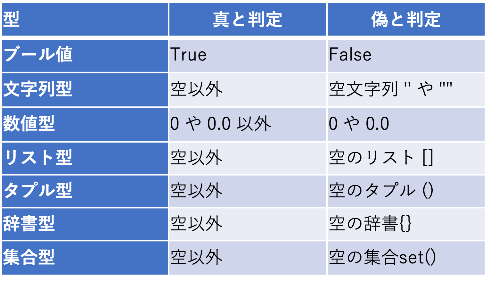

PythonのTIPS
目次
[top]時刻形式
時刻形式データの作成
datetimeで扱うことのできる時刻形式データを作成する
- datetime.dateを使う（日付のみを扱う場合）
from datetime import date time = date(年, 月, 日)
年、月、日は整数で与える - datetime.datetimeを使う（日付と時刻を扱う場合）
from datetime import datetime time = datetime(年, 月, 日, 時, 分, 秒)
年、月、日、時、分、秒は整数で与える - 現在時刻を与える場合（ローカルタイム）
from datetime import datetime time = datetime.now()
システム時刻をローカルタイムで取得 - 現在時刻を与える場合（UTC）
from datetime import datetime time = datetime.utcnow()
システム時刻をUTCで取得 - pandas.to_datetimeを使う（文字列から日付と時刻に変換）
import pandas as pd time = pd.to_datetime("年-月-日 時:分:秒") # ISO形式の場合例えば、"2021-09-04 12:00:00"のような形式
次のように、"20210904120000"のような数字の羅列でもよいtime = pd.to_datetime("年月日時分秒")
時刻形式データから年、月、日などを取り出す
時刻形式データ.取り出したい要素
- datetime.dateの場合
from datetime import date time = date(2021, 9, 4) print(time.year) print(time.moth) print(time.day)
time.yearで2021、time.monthで9、time.dayで4が整数値で返される
時、分、秒を表示しようとするとエラーになる - datetime.datetimeの場合
from datetime import datetime time = datetime(2021, 9, 4, 12, 30, 0) print(time.year) print(time.moth) print(time.day) print(time.hour) print(time.minute) print(time.second)
time.yearで2021、time.monthで9、time.dayで4、time.hourで12、time.minuteで30、time.secondで0が整数値で返される
pandas.to_datetimeの場合も挙動は同じ
時刻形式データから書式指定して取り出す
datetime.strftimeを使う
- 年/月/日
from datetime import datetime time = datetime(2021, 9, 4, 12, 30, 0) print(time.strftime("%Y/%m/%d"))"2021/09/04"の文字列が表示される
時刻表記の書式については時刻表記に用いられる書式指定子一覧参照 - 年/月/日 時:分:秒
from datetime import datetime time = datetime(2021, 9, 4, 12, 30, 0) print(time.strftime("%Y/%m/%d %H:%M:%S"))"2021/09/04 12:30:00" の文字列が表示される - ISOフォーマット
from datetime import datetime time = datetime(2021, 9, 4, 12, 30, 0) print(time.isoformat())
"2021-09-04T12:30:00" の文字列が表示される
詳細はISOフォーマットで表示する参照
時刻形式データの演算
datetime.timedeltaを使うことで時刻形式データの演算を行うことができる
- datetime.datetimeで作成したものを利用
from datetime import datetime, timedelta time = datetime(2021, 9, 4, 12, 0, 0) time_new = time + timedelta(hours=12)
9/4 12時から12時間後の9/5 0時になる - 日単位での演算も可能
from datetime import datetime, timedelta time = datetime(2021, 9, 4, 12, 0, 0) time_new = time + timedelta(days=2)
9/4 12時から2日後の9/6 12時になる - 減算することもできる
from datetime import datetime, timedelta time = datetime(2021, 9, 4, 12, 0, 0) time_new = time - timedelta(days=2)
9/4 12時から2日前の9/2 12時になる - pandas.to_datetimeで作成したものを利用
import pandas as pd from datetime import timedelta time = pd.to_datetime("20210904120000") time_new = time + timedelta(hours=12)datetimeで作成した場合と同様に演算可能
1ヶ月後、1年後を計算する
datetime.timedeltaでは、1ヶ月後、1年後などを指定するとエラーになる
dateutil.relativedeltaを使うと加算・減算が可能
dateutil.relativedeltaを使うと加算・減算が可能
- 1ヶ月後の計算
from datetime import datetime from dateutil.relativedelta import relativedelta time_cur = datetime(2021, 9, 4, 12, 0, 0) time_new = time_cur + relativedelta(months=1)
9/4 12時から1ヶ月後の10/4 12時になる - 1年後の計算
from datetime import datetime from dateutil.relativedelta import relativedelta time_cur = datetime(2021, 9, 4, 12, 0, 0) time_new = time_cur + relativedelta(years=1)
2021/9/4 12時から1年後の2022/9/4 12時になる - 閏年をまたいだ場合
from datetime import datetime from dateutil.relativedelta import relativedelta time_cur = datetime(2021, 9, 4, 12, 0, 0) time_new = time_cur + relativedelta(years=4)
閏年をまたいでも、4年後の同じ日の2025/9/4 12時になる
月末の日を計算する
dateutil.relativedeltaの１ヶ月後の計算を応用して月末の日を計算する
この計算では月初を指定しないといけないので、time_curがいつでも月末の日を計算できるように変更する
from datetime import datetime from dateutil.relativedelta import relativedelta time_cur = datetime(2021, 8, 1, 0, 0, 0) time_new = time_cur + relativedelta(months=1) - relativedelta(days=1) print(time_new)2021-08-31 00:00:00が表示される
この計算では月初を指定しないといけないので、time_curがいつでも月末の日を計算できるように変更する
time_cur = datetime.now()
time_new = time_cur.replace(day=1) + relativedelta(months=1) - relativedelta(days=1)
print(time_new.strftime('%Y-%m-%d'))
今月の月末の日が表示される
年初からの日数を計算する
datetimeの演算を利用する
from datetime import datetime doy = (datetime(2021, 6, 21) - datetime(2021, 1, 1)).days print(doy)171が表示される（1/1が0、1/2が1、、、で計算されたもの）
当日の00UTCを取得する
datetime.utcnowで取得した現在時刻を書き換える
from datetime import datetime time = datetime.utcnow().replace(hour=0, minute=0, second=0, microsecond=0)時、分、行、マイクロ秒を全て0に書き換え当日の00UTCにする
年初の00UTCを取得する
当日の00UTCを取得する場合と同様に、datetime.utcnowで取得した現在時刻を書き換える
from datetime import datetime time = datetime.utcnow().replace(month=1, day=1, hour=0, minute=0, second=0, microsecond=0)月を1月、日を1日とし、時、分、行、マイクロ秒を全て0に書き換え年初の00UTCにする
ISOフォーマットで表示する
datetime.datetimeのisoformatメソッドを利用する
- デフォルトのISO date表示
from datetime import datetime dt = datetime(2022, 3, 8, 12, 31, 12) print(dt.isoformat()) print(type(dt.isoformat())) 出力： 2022-03-08T12:31:12（デフォルトでは日付と時刻の間にTが入り、秒まで） <class 'str'>（文字型に変換されている）
- 日付と時刻の間を空白にする
from datetime import datetime dt = datetime(2022, 3, 8, 12, 31, 12) print(dt.isoformat(' ')) 出力： 2022-03-08 12:31:12 - ミリ秒まで表示する
from datetime import datetime dt = datetime(2022, 3, 8, 12, 31, 12) print(dt.isoformat(timespec='milliseconds')) 出力： 2022-03-08T12:31:12.000
- 日付と時刻の間を空白、ミリ秒まで表示
from datetime import datetime dt = datetime(2022, 3, 8, 12, 31, 12) print(dt.isoformat(sep=' ', timespec='milliseconds')) 出力： 2022-03-08 12:31:12.000
sepオプションは省略可能 - マイクロ秒まで表示する
from datetime import datetime dt = datetime(2022, 3, 8, 12, 31, 12, 30) print(dt.isoformat(timespec='microseconds')) 出力： 2022-03-08T12:31:12.000030
datetimeの7番目の引数にマイクロ秒を与えることができる - 分まで表示する
from datetime import datetime dt = datetime(2022, 3, 8, 12, 31, 12) print(dt.isoformat(timespec='minutes')) 出力： 2022-03-08T12:31
時間方向のループを回す
多重ループは遅くなるので時刻変数は1つのみとし、timedeltaを足して時刻を進める
- time_staからtime_endまで
from datetime import datetime, timedelta time_sta = datetime(2022, 9, 1, 0, 30, 0) # 開始時刻（2022/09/01 00:30:00） time_end = datetime(2022, 9, 2, 12, 30, 0) # 終了時刻（2022/09/02 12:30:00） time_step = timedelta(hours=1) # 時刻を進める間隔（1時間） time_now = time_sta while True: if time_now <= time_end: latest_time = time_now.strftime("%Y-%m-%d %H:%M:%S") print(latest_time) else: break # time_endを超えたら終了 # time_step分時刻を進める time_now = time_now + time_step＊1日刻みにしたい場合には、time_step = timedelta(days=1)
＊1ヶ月で刻みたい場合には、dateutil.relativedeltaをimportしてtime_stepを設定するfrom dateutil.relativedelta import relativedelta time_step = timedelta(months=1)
毎日の同じ時刻の計算
開始時刻（1970-01-01 00:00:00）からの差を1日で割った余りを求める
- Pandasの場合
import pandas as pd base_time = pd.Timestamp(0) time = (df_time - base_time) % pd.Timedelta(1, 'D')
＊df_timeはPandasのSeriesで時刻情報が入っている場合 - Numpyの場合
import numpy as np base_time = np.datetime64(0, 'ns') time = (df_time.to_numpy() - base_time) % np.timedelta64(1, 'D')
＊df_timeはPandasのSeriesかDataFrame
ディレクトリ、ファイル
ディレクトリのパスを結合する
os.path.joinを使う
UNIX環境では/、Windows環境では¥が設定されるので、OSに依存しないコードが書ける
import os dir1 = "dir_name1" dir2 = "dir_name2" dir_path = os.path.join(dir1, dir2)dir_pathには、UNIX環境ではdir_name1/dir_name2が入る
UNIX環境では/、Windows環境では¥が設定されるので、OSに依存しないコードが書ける
ディレクトリ、ファイルが存在するか確認する
os.path.existsを使う
import os
os.path.exists("ディレクトリ、ファイルのパス")
存在すればTrueが返る
- ディレクトリが存在するか確認する
os.path.isdir("ディレクトリのパス")ディレクトリが存在する場合はTrue - ファイルが存在するか確認する
os.path.isfile("ファイルのパス")ファイルが存在する場合はTrue - リンクを確認する
os.path.islink("ディレクトリ、ファイルのパス")存在するリンクの場合はTrue
ディレクトリ内の一覧を取得する
os.listdirを使うと、ディレクトリ内のファイル、サブディレクトリ一覧を取得できる
- 現在のディレクトリ内の一覧を表示する
import os print(os.listdir(".")) - ディレクトリ内のファイル一覧を取得し、パスを表示
import os input_dir = "ディレクトリのパス" files = os.listdir(input_dir) # この時点ではサブディレクトリも含まれる for f in [f for f in files if os.path.isfile(f)]: print(os.path.join(input_dir, f))
ファイルの場合にTrueを返すos.path.isfile()を使った
ワイルドカードで一覧を取得する
glob.glob関数を使うと、UNIXライクなワイルドカードで一致するファイル、ディレクトリを取得できる
import glob
files = glob.glob("ワイルドカードを含む記述")
直下のtest1/*.txtをリストにする
import glob
files = glob.glob("test1/*.txt")
ディレクトリ、ファイルの所有者、グループを変更する
os.chownを使う
＊いずれかを変更しない場合には、-1を指定する
import os
os.chown("ディレクトリ、ファイル名", uid, gid)
＊指定されたuid、gid（整数型）に変更する＊いずれかを変更しない場合には、-1を指定する
- dir01のGIDを5000に変更する
os.chown("dir01", -1, 5000)実行するユーザが変更前・変更後の両方のグループに所属していない場合はエラー - dir01/file01.txtのUIDを1040に変更する
os.chown("dir01/file01.txt", 1040, -1)所有者を変更できるのはroot権限で実行した場合のみ
ディレクトリ、ファイルのパーミッションを変更する
os.chmodを使う
- file01を誰でも読み込み可能にする（所有者は書き込みも可能）
os.chmod("file01", 0o644)＊0644でも有効な場合もあるがエラーが出る場合は、この記述を使う - file01を誰でも読み込み実行可能にする（所有者は書き込みも可能）
os.chmod("file01", 0o755) - dir01を誰でも読み込み実行可能にする（所有者は書き込みも可能）
os.chmod("dir01", 0o755)＊ディレクトリの場合、実行可能権限がないとディレクトリ内にアクセスできないことに注意（ディレクトリ内のリストを表示するには、読み込み権限が必要）
ディレクトリを作成する
os.makedirsを使う
import os
os.makedirs("ディレクトリのパス")
＊mkdir -p同様に、存在しない場合には親ディレクトリも作成する
ディレクトリ、ファイルを削除する
os.removeを使う
import os
os.remove("削除するディレクトリ、ファイルのパス")
＊ディレクトリの場合、rm -r ディレクトリのパス と同じ動作をする（ディレクトリごと削除）
シンボリックリンクを作成する
os.symlinkを使う
import os
os.symlink("リンク元のパス", "リンク先のパス")
ディレクトリ、ファイルをコピー、移動する
shutilを使う
- 例：コピーする場合
import shutil shutil.copy("コピー元のパス", "コピー先のパス") - 例：移動する場合
import shutil shutil.move("移動元のパス", "移動先のパス")
カレントディレクトリを移動する
os.chdirを使う
import os
os.chdir("移動先のパス")
環境変数、パス
環境変数を取得する
os.environ.getを使う
- 例：カレントディレクトリを取得する
import os cur = os.environ.get('PWD')カレントディレクトリは次の方法でも取得可能cur = os.getcwd()
- 例：LANGの取得
import os lang = os.environ.get('LANG', "C")取得できなかった場合は英語表記（C）に設定
環境変数を追加・上書きする
os.environを使う
- 例：rsyncに用いるコマンド設定（RSYNC_RSH）
import os os.environ['RSYNC_RSH'] = 'rsh'
rshに設定される - 例：セキュリティ上好ましくないのでsshに変更する
import os os.environ['RSYNC_RSH'] = 'ssh'
sshに上書きされる
pythonパッケージへのパスを追加する
sys.path.appendを使う
- 例：親ディレクトリをパスに追加する
import sys sys.path.append('../') - 例：os.pardirを使う方法
import sys import os sys.path.append(os.pardir)
- 例：環境変数に追加する（bash）
% export PYTHONPATH=設定したいパス:${PYTHONPATH} - 例：環境変数に追加する（python）
import os os.environ['PYTHONPATH'] = '設定したいパス'
コマンドにパスが通っているか確認する
shutil.whichを使う
パスが通っていない場合の処理を指定する場合
import shutil
shutil.which("コマンド名")
＊コマンドにパスが通っていれば、パスが表示される。パスが通っていない場合の処理を指定する場合
import shutil
if shutil.which("コマンド名") is None:
print("Not Found: コマンド名")
＊パスが通っていない場合Noneを返すのを利用する
文字列
大文字と小文字の変換
文字列のメソッドを利用する
- 全て小文字にする
"ABc".lower() 出力：abc
- 全て大文字にする
"aBc".upper() 出力：ABC
- 大文字と小文字を逆にする
"aBc".swapcase() 出力：AbC
- 先頭のみ大文字にする
"aBc".capitalize() 出力：Abc
- 単語の先頭を大文字にする
"the abc".title() 出力：The Abc
文字列から改行記号を取り除く
文字列のメソッドを利用する
- 改行コード（LF）を取り除く
"文字列".replace('\n', '') - 改行コードを取り除く（rstrip使用）
"文字列".rstrip()
末尾の文字が取り除かれる - 両端（先頭、末尾）の文字を取り除く
"文字列".strip()
改行記号の他に先頭の空白なども取り除きたい場合 - タブを取り除く場合
"文字列".replace('\t', '') - 機種依存なく改行コードを取り除く
"".join("文字列".splitlines())splitlinesでLFもCRLFも分割し、joinで結合する - 改行コードをLFに置き換える
"¥n".join("文字列".splitlines()) - 読み取った文章から全ての改行記号を取り除く
with open(file_name) as f: words = f.readlines() res = [line.rstrip() for line in words]
resには行毎のリストが入る - 検索した文字列が含まれる行のみリストに
with open(file_name) as f: words = f.readlines() res = [line.rstrip() for line in words if '文字列' in line]
文字列からboolへの変換
文字列が"true"、"t"、"yes"、"1"のいずれかの場合にTrueとする。大文字・小文字を区別しないようにするため、lower()で小文字に変換している
b = "文字列".lower() in ["true", "t", "yes", "1"]bにはTrueかFalseが入っている
条件式
pythonにおける真偽値の判定
- 真偽値 
全ての要素がTrueか判定する
allを用いる
＊allの引数には、リスト、タプル、集合が使用可能
参考：Pythonの組み込み関数all(), any()の使い方
print(all([True, True, True])) 出力：True print(all([True, True, False])) 出力：False＊全てTrueの時のみTrueが表示される
＊allの引数には、リスト、タプル、集合が使用可能
参考：Pythonの組み込み関数all(), any()の使い方
いずれかの要素がTrueか判定する
anyを用いる
＊allの引数には、リスト、タプル、集合が使用可能
print(any([True, False, False])) 出力：True print(any([False, False, False])) 出力：False＊１つでもTrueが含まれていればTrueが表示される
＊allの引数には、リスト、タプル、集合が使用可能
全ての要素がFalseか判定する
not anyを用いる
＊allの引数には、リスト、タプル、集合が使用可能
print(not any([False, False, False])) 出力：True print(not any([False, False, True])) 出力：False＊anyの否定を取ることで、全ての要素がFalseの場合を判定できる
＊allの引数には、リスト、タプル、集合が使用可能
オブジェクト同士の比較
isinstence関数を用いる
isinstance(object, classinfo)1番目の引数のオブジェクトが、2番目の引数で指定したデータ型のオブジェクトかサブクラスのオブジェクトの場合にTrueとなる
- 整数型か判断する
isinstance(1, int) 出力：True
- 文字列型か判断する
isinstance(1, str) 出力：False isinstance("1", str) 出力：True - 整数か浮動小数点数のどちらかとの一致を判断する
isinstance(1, (int, float)) 出力：True isinstance(1.5, (int, float)) 出力：True isinstance("1.5", (int, float)) 出力：False - bool型の場合
isinstance(True, int) 出力：True
isinstance(False, int) 出力：True
isinstance(True, bool) 出力：True
isinstance(False, bool) 出力：True
リスト
pythonにおけるリスト
要素を順番に並べたもので中身を変更・追加・削除可能。要素の型はまちまちでも良く、リストの要素に文字列、整数、実数などの他、リストやタプル、Numpyの配列などオブジェクトは何でも入れられる。
リストの作成
リストを作成する場合、次のように記述する
list_a = [1, 2, 4, 'a', 'b', 'c']要素が空のリストも作成可能
list_a = [] list_b = list()
リストの要素の変更
リストの要素番号を指定して値を置き換えることが可能
list_a[1] = 3 print(list_a) 出力：[1, 3, 4, 'a', 'b', 'c']
リストへの追加
リストの.appendを使う
list_a.append(5) print(list_a) 出力：[1, 3, 4, 'a', 'b', 'c', 5]
リスト同士の結合
リストの.extendを使う
list_a = [1, 2, 4, 'a', 'b', 'c'] list_b = [5, 7, 10, 'd', 'e', 'f'] list_a.extend(list_b) print(list_a) 出力：[1, 2, 4, 'a', 'b', 'c', 5, 7, 10, 'd', 'e', 'f']＊extendではなくappendを使うと、リストの中にリストが入る
list_a = [1, 2, 4, 'a', 'b', 'c'] list_b = [5, 7, 10, 'd', 'e', 'f'] list_a.append(list_b) print(list_a) 出力：[1, 2, 4, 'a', 'b', 'c', [5, 7, 10, 'd', 'e', 'f']]
リスト内包表記
リストの要素を個別にstrに変換する場合
new_list_a = [str(x) for x in list_a]例えば元のlist_aに数値のリストが入っている場合など
- 1〜100までの数字
numbers = np.arange(1, 101) num_list = [l for l in numbers]
numbersに含まれるlを順にリストに追加 - 3で割って1余る数のリスト（1〜100まで）
numbers = np.arange(1, 101) num_list = [l for l in numbers if l % 3 == 1]
後ろの条件式を満たした場合のみリストに追加される
タプル
pythonにおけるタプル
リストのように要素を順番に並べたものであるが、一度作成されたものは変更できない。要素の型はまちまちでも良く、タプルの要素に文字列、整数、実数などの他、リストやタプル、Numpyの配列などオブジェクトは何でも入れられる。
タプルの作成
タプルを作成する場合、次のように記述する
tup_a = (1, 2, 'a') print(tup_a) 出力：(1, 2, 'a')要素が1の場合、次のような記述ではタプルにならないので注意
tup_a = (1) print(type(tup_a)) 出力：<class 'int'>要素が1の場合、正しくは次のようにカンマを付けて記述する
tup_a = (1, ) print(type(tup_a)) 出力：<class 'tuple'>
集合
pythonにおける集合
集合を作成する場合は、set()か{}を用いる。
set_a = set("abc")
print(set_a)
＊{'a', 'b', 'c'}が表示される
集合同士の演算
集合同士の演算が可能
set_a = set("abc") # {'a', 'b', 'c'}
set_b = set("cde") # {'c', 'e', 'd'}
print(set_a & set_b) # and演算
出力；{'c'}
print(set_a | set_b) # or演算
出力：{'b', 'c', 'e', 'd', 'a'}
print(set_b - set_a) # 集合の差
出力： {'e', 'd'}
print(set_a - set_b) # 集合の差
出力： {'b', 'a'}
辞書
pythonにおける辞書
キーと値のセットを順番に並べたもので、中身を変更・追加・削除可能。キーは文字型。値の型はまちまちでも良く、文字列、整数、実数などの他、リストやタプル、Numpyの配列などオブジェクトは何でも入れられる。
辞書の作成
辞書を作成する場合、次のように記述する
dictを使って辞書を作成する場合、次のように記述
dict_a = {'a': 'value_a', 'b': 'value_b'}
要素が空の辞書も作成可能
dict_a = dict()＊dict_a = {}でも空の辞書になるが、集合と紛らわしい
dictを使って辞書を作成する場合、次のように記述
dict_a = dict(a = 'value_a', b = 'value_b')
辞書の変更・追加
新しいキーと値のペアを追加する
dict_a = {'a': 'value_a', 'b': 'value_b'}
dict_a['c'] = 'value_c'
print(dict_a)
出力：{'a': 'value_a', 'b': 'value_b', 'c': 'value_c'}
既に存在しているキーを使用すると、値が更新される
dict_a['c'] = 'value_c2'
print(dict_a)
出力：{'a': 'value_a', 'b': 'value_b', 'c': 'value_c2'}
辞書同士の結合
辞書dict_aとdict_bを結合する場合
dict_a = {'a': 'value_a', 'b': 'value_b'}
dict_b = {'c': 'value_c', 'd': 'value_d'}
dict_c = {**dict_a, **dict_b}
print(dict_c)
出力：{'a': 'value_a', 'b': 'value_b', 'c': 'value_c', 'd': 'value_d'}
Web
pythonでwebサーバを起動
Webページのコンテンツのある場所で以下のコマンドを実行する。
% python3 -m http.server 8000ブラウザから次のようにアクセスする。
http://localhost:8000＊テスト環境での使用を想定しており、公開サーバとはすべきではない
ファイルをダウンロードする
urllib.requestを用いる
import urllib.request
urllib.request.urlretrieve("URL", "保存するファイルのパス")
ダウンロードにリトライ回数を設定する
再帰関数を用いる
import urllib.request
def download(cnt=2):
if cnt <= 0:
raise RecursionError('maximum recursion count exceeded')
try:
urllib.request.urlretrieve("URL", "保存するファイルのパス")
except OSError:
time.sleep(10.0) # 10秒間待つ
download(cnt=cnt - 1) # cntを減らして再帰
設定ファイル
設定ファイルの形式
次のように[セクション]で区切られ、各セクションに複数のキーと値のペアが配置されている。
[Default] SHELL = /bin/bash TERM = xterm-256color LANG = ja_JP.UTF-8 [filenames] InputFileName = input.txt OutputFileName = output.txt
設定ファイルの読み込み
設定ファイルをconfig.iniとして保存したものを読み込む例。
import configparser
config = configparser.ConfigParser()
config.read("config.ini")
- セクションを表示する場合
print(config.sections())
出力：['Default', 'filenames']
＊キーは大文字、小文字を区別する - キーに対応する値を表示する場合
print(config["Default"]["SHELL"])
出力：/bin/bash - 小文字にした場合
print(config["Default"]["shell"])
出力：/bin/bash
＊キーは大文字、小文字を区別しない - セクション内のキーを全て表示する
for key in config["Default"]: print(key)
出力：shell term lang
- セクション内のキー、値のペアを全て表示する
for key in config["Default"]: print(key)
出力：shell /bin/bash term xterm-256color lang ja_JP.UTF-8
設定ファイルの書き出し
設定ファイルをconfig.iniとして出力するmkconfig.pyを作成する。
#!/usr/bin/env python3
import configparser
config = configparser.ConfigParser()
config['Default'] = {
'SHELL': '/bin/bash',
'TERM': 'xterm-256color',
'LANG': 'ja_JP.UTF-8'
}
config['filenames'] = {
'InputFileName': 'input.txt',
'OutputFileName': 'output.txt'
}
# 書き出し
with open('config.ini', 'w') as f:
config.write(f)
＊出力されたファイルでは、次のようにキーが全て小文字となる。
[Default] shell = /bin/bash term = xterm-256color lang = ja_JP.UTF-8 [filenames] inputfilename = input.txt outputfilename = output.txt
例外処理の概要
例外処理の概要
すべての例外は BaseException（例外の基底クラス）から派生するが、BaseExceptionはユーザのコードでは使用しない
コード中で例外を検出、生成する場合には、Exceptionから派生した組み込み例外を用いる
例えば、モジュールのロードで問題が発生した場合には、ImportError、ファイルが存在しない、ディスク容量超過などシステム関連のエラーは OSError、など
詳細については、組み込み例外参照
コード中で例外を検出、生成する場合には、Exceptionから派生した組み込み例外を用いる
例えば、モジュールのロードで問題が発生した場合には、ImportError、ファイルが存在しない、ディスク容量超過などシステム関連のエラーは OSError、など
詳細については、組み込み例外参照
例外処理の記述方法
OSErrorの場合
exceptのみでも動作するが、PEP8では組み込み例外の名前を記載することになっている（except Exceptionは許容）
try: 処理内容（ファイルを開けるなど） except OSError as e: raise OSError(e)OSErrorの内容を表示する
exceptのみでも動作するが、PEP8では組み込み例外の名前を記載することになっている（except Exceptionは許容）
例外を補足し終了コードを返す
スクリプトの最上位で例外を補足し、終了コードを返す場合
if __name__ == "__main__": try: main() except Exception: raise SystemExit(-1) raise SystemExit(0)main関数が正常終了した場合は0、異常終了した場合は-1を返す
subprocessの例外を補足する
subprocessの終了コードを判定する
com_list = ['コマンド', 'オプション1', 'オプション2', ...] try: res = subprocess.run(com_list, stdout=subprocess.PIPE, stderr=subprocess.PIPE) except Exception: exception = sys.exc_info()[1] raise Exception(exception) if res.returncode != 0: raise Exception(Abort with return code ' + str(res.returncode))
外部コマンド
外部コマンドの実行
subprocess.runを使う
import subprocess
subprocess.run("コマンド", "引数1", "引数2", ...)
シェルを利用した外部コマンドの実行
subprocess.runでshell=Trueとする
import subprocess
subprocess.run("コマンド 引数1 引数2", shell=True)
パイプも使用可能
subprocess.run("コマンド1 引数1 引数2 | コマンド2", shell=True)
＊shell=Trueでは、実行者の権限で任意のシェルコマンドを実行できてしまうので、使用は最小限に抑え、外部からの任意の入力を渡すことは避ける
外部コマンドの戻り値を取得する
subprocess.runの戻り値を利用する
import subprocess
res = subprocess.run("コマンド", "引数1", "引数2", ..., stdout=subprocess.PIPE, stderr=subprocess.PIPE)
print(res.stdout.decode("utf-8")) # 標準出力の表示
print(res.stderr.decode("utf-8")) # 標準エラー出力の表示
print(str(res.returncode)) # 終了ステータスの表示
＊pyton3標準のUTF-8への変換を行なっている
その他
QRコードを生成する
pyqrcodeを使う（pngで書き出す際はpypngも必要）。MacPortsの場合には、
% sudo port install py312-pypng py312-pyqrcodepy312の部分はpythonのバージョンに合わせて変更する。次のようにQRコードを生成する。
import pyqrcode
# QRコード生成
code = pyqrcode.create("URLやメールアドレスなど", error='L', version=3, mode='binary')
# pngで保存
code.png("ファイル名.png", scale=5, module_color=[0, 0, 0, 128], background=[255, 255, 255])
base64でエンコードする
base64を使う。MacPortsの場合には、
DIASで提供されているJRA-3Q（doi:10.20783/DIAS.645）のダウンロードスクリプトに適用する場合
% sudo port install base64次のように文字列をbase64に変換する。
import base64
enc = base64.b64encode('文字列')
DIASで提供されているJRA-3Q（doi:10.20783/DIAS.645）のダウンロードスクリプトに適用する場合
- 気圧面データ（1.25°×1.25°）の場合（変数毎に別ファイル）
import base64 from datetime import datetime, timedelta base_url = 'https://data.diasjp.net/dl/storages/downloadCmd/' prefix = 'anl_p125' time_str = datetime(2024, 1, 1, 0, 0, 0) # 開始時刻 time_end = datetime(2024, 1, 31, 18, 0, 0) # 終了時刻 time_step = timedelta(hours=6) # 6時間毎 for var in ['ugrd', 'vgrd', 'depr', 'hgt', 'rh', 'spfh', 'vvel', 'relv', 'reld', 'vpot', 'strm']: ofirst = True time = time_str time_bef = time_str - time_step while True: if time > time_end: break if time.month != time_bef.month or ofirst: # 月に1度実行 YYMM = time.strftime('%Y%m') # YYMM形式 dir_path = '/JRA3Q/Hist/Daily/' + prefix + '/' + YYMM + '/' file_name0 = prefix + '_' + var + '_L42.' + YYMM + '.ctl' file_name1 = prefix + '_' + var + '_L42.' + YYMM + '.idx' for file_name in [file_name0, file_name1]: dir_file = dir_path + file_name enc = base64.b64encode(dir_file) # base64エンコード access.dl(base_url + enc, dir_path, file_name) # ダウンロード（DIASのコード参照） # 6時間毎のデータのダウンロード ftime = time.strftime('%Y%m%d%H') file_name = prefix + '_' + var + '.' + ftime dir_file = dir_path + file_name enc = base64.b64encode(dir_file) # base64エンコード access.dl(base_url + enc, dir_path, file_name) # ダウンロード（DIASのコード参照） time_bef = time time = time + time_step if ofirst: ofirst = False＊DIASで取得できるスクリプトに上記のコードを追記する - 表面データ（1.25°×1.25°）の場合（変数別のファイルなし）
import base64 from datetime import datetime, timedelta base_url = 'https://data.diasjp.net/dl/storages/downloadCmd/' prefix = 'anl_surf125' time_str = datetime(2024, 1, 1, 0, 0, 0) # 開始時刻 time_end = datetime(2024, 1, 31, 18, 0, 0) # 終了時刻 time_step = timedelta(hours=6) # 6時間毎 ofirst = True time = time_str time_bef = time_str - time_step while True: if time > time_end: break if time.month != time_bef.month or ofirst: # 月に1度実行 YYMM = time.strftime('%Y%m') # YYMM形式 dir_path = '/JRA3Q/Hist/Daily/' + prefix + '/' + YYMM + '/' file_name0 = prefix + '.' + YYMM + '.ctl' file_name1 = prefix + '.' + YYMM + '.idx' for file_name in [file_name0, file_name1]: dir_file = dir_path + file_name enc = base64.b64encode(dir_file) # base64エンコード access.dl(base_url + enc, dir_path, file_name) # ダウンロード（DIASのコード参照） # 6時間毎のデータのダウンロード ftime = time.strftime('%Y%m%d%H') file_name = prefix + '.' + ftime dir_file = dir_path + file_name enc = base64.b64encode(dir_file) # base64エンコード access.dl(base_url + enc, dir_path, file_name) # ダウンロード（DIASのコード参照） time_bef = time time = time + time_step if ofirst: ofirst = False
[top]